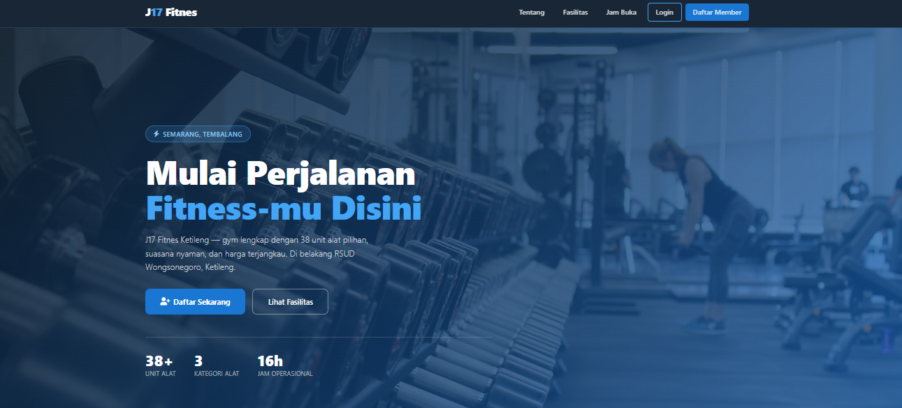

images/project-gym.jpg
PHP
MySQL
Bootstrap
Sistem Informasi Manajemen Gym
Sistem manajemen gym untuk J17 Fitnes Ketileng: autentikasi, kontrol akses berbasis peran, notifikasi masa aktif member, manajemen stok, dan check-in harian. PDO prepared statements untuk keamanan query.
lihat_detail() →